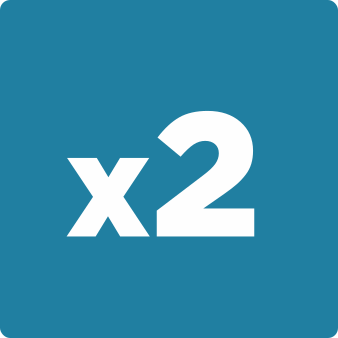
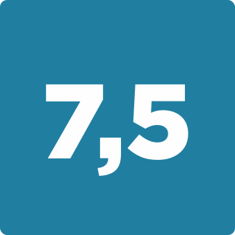

Сегодня в Омске функционирует свыше 300 малых, средних и крупных предприятий химии. В нефтехимическом комплексе сосредоточено более четверти основных фондов промышленности, в объеме регионального экспорта отрасль занимает свыше 90%. На промышленной карте Омской области ГК «Титан» занимает значимое место. Кроме того, титульная продукция ключевого предприятия Группы – завода «Омский каучук» занимает более 20% внутреннего рынка. О других итогах года крупной омской компании – в цифрах.
Арифметика производства
Уходящий 2023 год для предприятий ГК «Титан» был наполнен важными событиями. Специалисты «Титана» запускали новые производства, увеличивали объемы выпускаемой продукции, в компании создавали новые рабочие места:
На 7,5 % увеличился общий объем экспорта нефтехимической продукции Группы компаний за 3 квартала 2023 года по сравнению с аналогичным периодом прошлого года.
Свыше 120 новых рабочих мест получит Омская область благодаря созданию современного производства экоавтохимии на базе омской площадки завода «Титан-Смазочные материалы». В 2023 году проект получил финансовую поддержку Фонда развития промышленности.
60 тыс. тонн – проектная мощность нового производства изопропанола, торжественно открытого с участием министра промышленности и торговли РФ Дениса Мантурова и губернатора Омской области Александра Буркова.

В 2 раза увеличила сезонные объемы производства площадка «Титан-СМ» в г. Алексине (Тульская область). Таких показателей удалось достичь благодаря заключению новых контрактов с крупными торговыми сетями и специализированными магазинами автозапчастей.
160 тыс. тонн кумола может выпускаться на модернизированном производстве, разрешение на ввод в эксплуатацию которого ГК «Титан» получила в октябре.

Около 7,5 млрд рублей уже инвестировано в проект «Титан-Полимер», реализующийся в Псковской области.
«Сегодня Омской области есть, чем гордиться – мы производим каждую десятую автомобильную шину, каждую десятую тонну нефтепродуктов, каждую седьмую тонну полипропилена, пятую тонну метил-трет-бутилового эфира, пятую тонну синтетического каучука и каждую третью тонну технического углерода», - отметил министр промышленности, связи, цифрового и научно-технического развития Омской области Андрей Посаженников.
Экология как смысл дела
ГК «Титан» реализует комплексную экологическую программу, направленную на ресурсосбережение и снижение нагрузки на окружающую среду. За последние несколько лет на 20% была снижена нагрузка на атмосферу благодаря реализации экологических проектов на заводе «Омский каучук». И сегодня вклад предприятия в общий валовый выброс составляет менее 1,5 процентов. К 2023 году ГК «Титан» добилась и других результатов в области экологизации, а также поставила перед собой новые цели:
На 86%
сократилась нагрузка на окружающую на производстве кумола после модернизации благодаря применению наилучших доступных технологий.
70 кг
батареек собрали работники ГК «Титан» в рамках корпоративной акции. Их направили для дальнейшей утилизации на специализированное предприятие.
Около 4000
испытаний атмосферного воздуха, 800 замеров промышленных выбросов, 45 000 испытаний сточных вод выполнили в 2021 году специалисты экологической лаборатории завода «Омский каучук».
До 90 тонн
углеводородных газов ежемесячно сможет возвращать «Омский каучук» в производство. Ранее отходящие газы утилизировались на факельной установке. Технологическое новшество позволит не только экономить сырье, но и снизить воздействие на окружающую среду.
На 40%
позволят сократить выбросы вредных веществ от автомобильного транспорта высокооктановые топливные компоненты – ЭТБЭ, планируемые к производству на площадках ГК «Титан». Об этом в рамках Восточного экономического форума заявил председатель Совета директоров АО «ГК «Титан» Михаил Сутягинский, приведя расчеты на примере Омской области.
Более 80
экологических уроков было проведено в псковских школах в рамках проекта «Экомышление» и при поддержке завода «Титан-Полимер». Как сообщил координатор проекта, член экспертного совета Российского экологического движения Сергей Елизаров, уроки охватили около 380-400 школьников.
Еще на 20%
снизит выбросы ГК «Титан» к 2024 году. Эти планы были озвучены в ходе пресс-конференции 19 ноября 2021 года.
«Только на производстве фенола и ацетона благодаря примененным новым технологиям мы снизили выбросы на 32 процента. Еще один крупный проект – модернизация производства изопропилбензола (кумола). Там мы использовали наилучшие доступные технологии. В результате на этой установке полностью исключены стоки. Также мы одни из первых в Омской области получили ЭкоЗоС на вновь построенные или реконструированные установки – заключение Росприроднадзора в отношении объекта экологической экспертизы. Согласно документу, реконструкция производства кумола была осуществлена с соблюдением требований в области охраны окружающей среды и в соответствии с проектом. Всего с 2004 года в экологические проекты вложено более 10 млрд рублей», – рассказал генеральный директор АО «Омский каучук» Сергей Иванилов.
Быть открытым
Информационная открытость является важным элементом работы предприятия. В ГК «Титан» более двух лет работает Информационный центр как эффективный способ взаимодействия с общественностью:
Более 6000 публикаций о ГК «Титан» зафиксировано в медиа-источниках, из них около 70% материалов инициировано Информационным центром ГК «Титан».
Около 100 запросов от региональных и федеральных СМИ было отработано Инфоцентром в уходящем году.
В 4 социальных сетях оформлены сообщества Группы компаний «Титан»: «ВКонтакте», Telegram, Instagram, Facebook.
Почти 1500 сообщений размещено в сообществах ГК «Титан», из которых порядка 70 в видеоформате.
Около 100 учеников стали слушателями первых уроков «Полезная химия», которые состоялись накануне Дня учителя в Гимназии №12 и Надеждинской средней общеобразовательной школе Омского района. Работники Группы компаний рассказывают школьникам интересные факты о химии и ее значении в повседневной жизни.
«Наш Информационный центр начал свою работу в 2019 году. В результате увеличилось количество подписчиков в сообществах и их заинтересованность в контенте, возросло количество запросов со стороны региональных и федеральных СМИ. Спасибо коллегам из СМИ за то, что учите нас правильно работать, открываться аудитории и не бояться этого делать, – комментирует заместитель генерального директора по корпоративным коммуникациям АО «ГК «Титан» Алина Рыбина.